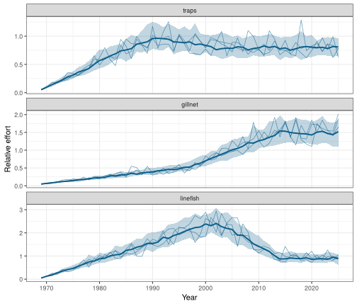
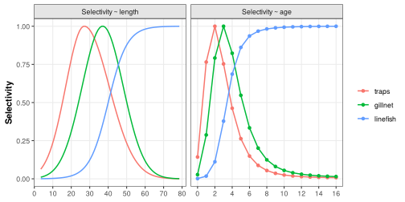
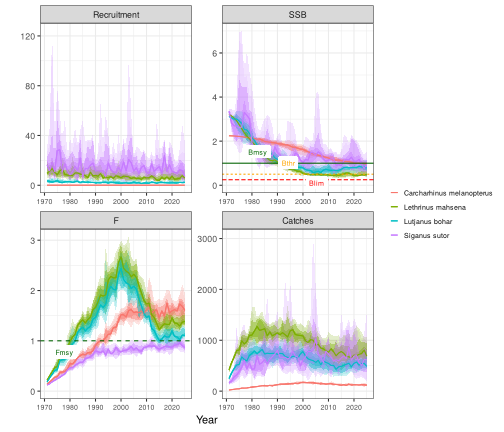
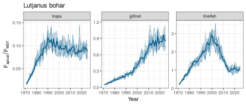
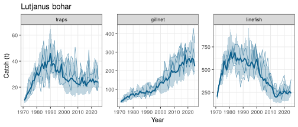
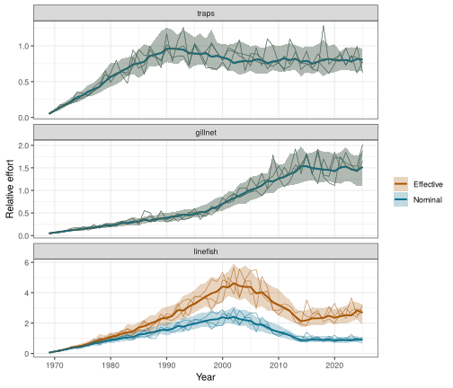

FLOSS 1: a multi-fleet reef operating model from saved specs
Source:vignettes/floss-01-reef-om.Rmd
floss-01-reef-om.RmdThis vignette rebuilds the multi-gear reef operating model (traps, gillnet, linefish; four species) from the specs shipped with FLOSS.
1 Fishery
The fishery is species-independent: fleets, years and nominal effort.
fy <- load_fishery("reef_3fleets")
fy
#> FLOSS fishery 'reef_3fleets': 3 fleets, 1969-2025
#> fleet trend sigmaE creep
#> traps fudc(e0=0.05, hi=1, lo=0.8, breaks=0.4/0.6) 0.15 0
#> gillnet fudc(e0=0.05, hi=0.5, lo=1.5, breaks=0.5/0.8) 0.15 0
#> linefish fudc(e0=0.05, hi=2.5, lo=0.9, breaks=0.6/0.8) 0.15 0
#> creep_start
#> 1969
#> 1969
#> 1969
plot_effort(fy, nsim = 50)
2 Species
species_library()[, c("id", "common_name", "msy", "source")]
#> id common_name msy source
#> 1 carcharhinus_melanopterus Blacktip reef shark 75 example
#> 2 lethrinus_mahsena Mahsena emperor 1000 example
#> 3 lutjanus_bohar Two-spot red snapper 600 example
#> 4 siganus_sutor Whitespotted rabbitfish 750 example
sp <- load_species("lutjanus_bohar")
sp
#> FLOSS species: Lutjanus bohar (Two-spot red snapper)
#> MSY = 600 productivity: Low-intermediate
#> life history: linf=71.4, k=0.212, t0=-1, a=0.01, b=3.04, lm=34.5, tm=3.07, tmax=16, M=0.325, s=0.68, sigR=0.437, rho=0.597
#> fleet selectivity relq
#> traps dnormal(Lpeak=27, sd_left=10, sd_right=13.5) 0.1
#> gillnet normal(Lpeak=37, sd=11.1) 0.5
#> linefish logistic(L50=40, L95=55) 1.0Selectivity by fleet, from FLRef::sel_la():
FLRef::plot_sel_la(species_sel(sp), age_by = 2, len_by = 10)
3 Operating models
All species share the same effort realisation; nsim is
kept small here.
oms <- build_oms(species_library()$id, fy, nsim = 10)
oms$lutjanus_bohar
#> FLOSS operating model: Lutjanus bohar
#> fishery: reef_3fleets ( traps, gillnet, linefish )
#> years: 1971 - 2025 iterations: 10
#> refpts: Fmsy=0.185, Bmsy=2040, Bthr=1020, Blim=511, MSY=585, B0=6920
#> final year (median): B/Bmsy = 0.782 F/Fmsy = 1.11The equilibrium is calibrated so that MSY equals the target; MSY under the realised mix of fleets is close to it:
t(sapply(oms, function(o) c(target = o$species$msy,
calibrated = FLCore::an(FLBRP::refpts(o$brp)["msy", "yield"]),
realised = c(o$stock@refpts["MSY"]))))
#> target calibrated realised
#> carcharhinus_melanopterus 75 75 73.58093
#> lethrinus_mahsena 1000 1000 990.71084
#> lutjanus_bohar 600 600 585.07897
#> siganus_sutor 750 750 744.14588
plot_om(oms)
plot_fleets(oms$lutjanus_bohar)
plot_fleets(oms$lutjanus_bohar, "catch")
4 Effort creep
With 2% efficiency increase per year in the linefish fleet, nominal effort is unchanged but fishing mortality, and depletion, increase:
fy_creep <- reef_fishery(creep = c(traps = 0, gillnet = 0, linefish = 0.02))
plot_effort(fy_creep, nsim = 50, efficiency = TRUE)
om_creep <- build_om(sp, fy_creep, nsim = 10)
om_creep
#> FLOSS operating model: Lutjanus bohar
#> fishery: reef_3fleets ( traps, gillnet, linefish )
#> years: 1971 - 2025 iterations: 10
#> refpts: Fmsy=0.251, Bmsy=2080, Bthr=1040, Blim=521, MSY=626, B0=6920
#> final year (median): B/Bmsy = 0.307 F/Fmsy = 2.11